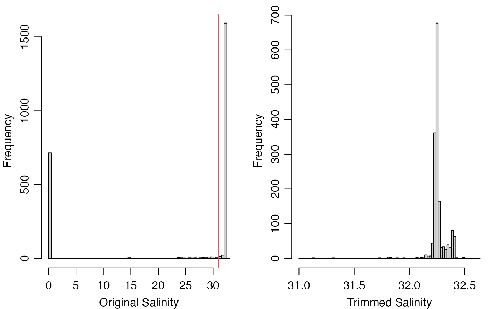

This function may be used to set suspicious data to NA,
or some other value, based on the values of corresponding data-quality
flags.
Usage
handleGliderFlags(
object,
flags = NULL,
actions = NULL,
where = "payload1",
debug = getOption("gliderDebug", 0)
)Arguments
- object
An object of glider.
- flags
A
listspecifying flag values upon which actions will be taken. This can take two forms. In the first, the list has named elements each containing a vector of integers. For example, salinities flagged with values of 3 ("suspect"), 4 ("fail") or 9 ("missing") would be specified byflags=list(salinity=c(3,4,9)). Several data items can be specified, e.g.flags=list(salinity=c(3,4,9),temperature=c(3,4,9))indicates that the actions are to take place for both salinity and temperature. In the second form,flagsis a list with unnamed vectors, and this means to apply the actions to all the data entries; thus,flags=list(c(3,4,9))means to apply not just to salinity and temperature, but also to everything else for which flags have been set up. Ifflagsis not provided, thendefaultFlags()is called onobject, to try to determine a conservative default.- actions
An optional
listthat contains items with names that match those in theflagsargument. Ifactionsis not supplied, the default will be to set all values identified byflagstoNA; this can also be specified by specifyingactions=list("NA"). It is also possible to specify functions that calculate replacement values. These are provided withobjectas the single argument, and must return a replacement for the data item in question.- where
An optional string that permits data and flags to be stored indirectly, e.g. with data in
object@data[[where]]instead of inobject@data, and flags inobject@metadata$flags[[where]]instead of inobject@metadata$flags. Ifwhereis NULL, the second forms are used. This scheme is needed because SeaExplorer data are stored in this manner.- debug
An optional integer specifying the degree of debugging, with value 0 meaning to skip debugging and 1 or higher meaning to print some information about the arguments and the data. It is usually a good idea to set this to 1 for initial work with a dataset, to see which flags are being handled for each data item. If not supplied, this defaults to the value of
\link{getOption}("gliderDebug",0).
Details
The flags are stored within the object as a list
named payload1, which is stored within a list named flags
that is stored in the object's metadata slot. Both
flags and flags$payload1 are set up when the object is
created, but values are inserted into flags$payload1 are
inserted later, when the data are read by one of the read.glider*
functions.
For example, read.glider.seaexplorer.delayed()
sets flags$payload1$salinity to be a vector of length
matching the data stored in data$payload1$salinity, and
does the same for temperature and some other things that are typically
assessed as part of quality-assessment procedures. When these
things are set up, they are also assigned numerical values, one for
each element in the data set. The initial value is set to
value 2, which means not_evaluated
in the IOOS 2017 quality-control scheme (see table 2 of reference 1).
These numerical values provide a way to edit a dataset in an
convenient and traceable way, through the appropriate setting
of the flags and actions arguments. Flag values
may be altered with setGliderFlags(), as
illustrated in the “Examples” section.
References
U.S. Integrated Ocean Observing System. "Manual for Real-Time Oceanographic Data Quality Control Flags, Version 1.2,"
https://cdn.ioos.noaa.gov/media/2020/07/QARTOD-Data-Flags-Manual_version1.2final.pdf.
See also
Other functions relating to data-quality flags:
setGliderFlags()
Examples
library(oceglider)
directory <- system.file("extdata/sea_explorer/delayed_raw", package = "oceglider")
g <- read.glider.seaexplorer.delayed(directory, progressBar = FALSE)
# The histogram motivates a crude limit for anomalously low salinity.
par(mfrow = c(1, 2), mar = c(3, 3, 1, 1), mgp = c(2, 0.75, 0))
hist(g[["salinity"]], breaks = 100, xlab = "Original Salinity", main = "")
abline(v = 31, col = 2)
# Flag value 3 means 'suspect' in the IOOS scheme [1, table]; other
# flags are pass=1, not_evaluated=2 (the default as read), fail=4, and missing=9.
g2 <- setGliderFlags(g, "salinity", g[["salinity"]] < 31, 3)
g3 <- handleGliderFlags(g2, c(3, 4, 9)) # use default action, which is "NA"
hist(g3[["salinity"]], breaks = 100, xlab = "Trimmed Salinity", main = "")
